~CSS Transitions~
3/25/2024
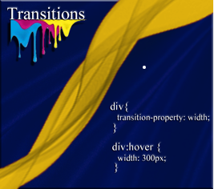
What are CSS Transitions?
Transitions are an easy type of animation that you can do with elements on your web pages. They are fairly simple to understand, so don’t get scared off right from the start of this thing.
To create a transition effect, you will need to specify two things
- The property that you want to mess with
- And the time you want it to take, for the property to be messed with
Well, I suppose before we can even begin trying to transition anything, we are going to need something to transition. That is easy, we got a div and we know how to use it; ahem…make it a box.
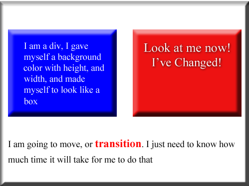
Oh, yeah just tell me what I am, and how much time I got.
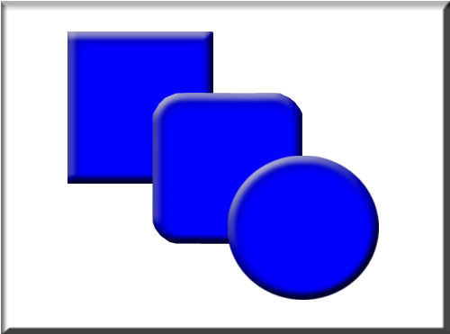
The Hover Event
Now what will we use to transition us? The hover event is something most of us have already used. After all, this is done any time we want to transition the color of a button, or a hyperlink to look different when a user interacts with it. And the change will take effect, whenever that user hovers a mouse over it. So, a hover event is also the perfect mechanism to use, when we want to enable simple animation.
To set up the code
If you just set your code to target div, you will find that all of your divs will be affected, and that is probably not what you want. So, best to create a div in your html, and then give it a class name, where we are only targeting that div alone.
The Html
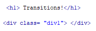
Notice that in order to create a simple animation like this, the only code which might be unfamiliar is just one line. So, if you learn to use the property transition, on top of what you already know, then you are animating.
The CSS
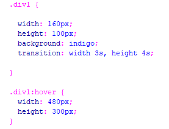
Now if you run it, and hover over your rectangle, you will find that your height of the shape is taking 4 seconds to reach its full size, while the width is only taking 3 seconds. Because that is what was specified in our transition code.
Go Here to view this in action
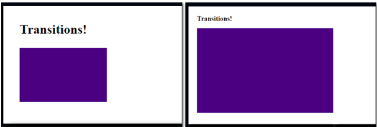
Speed Curve of Transitions
The speed curve, is something that will allow you to determine how fast the element you are working on, starts to do what you want it to do, and then also how fast, at the end that you want the element to stop doing what you want it to do.
You can set your speed curve at different settings, something like the speeds on a fan, except that you are working with speeds at the beginning and end of the movement of your object. And even if it might be a cool effect, unlike a fan, these speeds do nothing to cool you off.
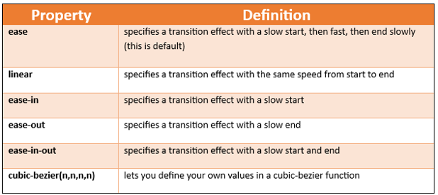This is how you would write this timing function in your code
HTML
<h1> Transitions!</h1>
<p>Hover over the div elements below, to see the different speed curves:</p>
<div class="div1">linear</div><br>
<div class="div2">ease</div><br>
<div class="div3">ease-in</div><br>
<div class="div4">ease-out</div><br>
<div class="div5">ease-in-out</div><br>
CSS
.div1,.div2,.div3,.div4,.div5 {
width: 250px;
height: 130px;
background: green;
transition: width 2s;
font-family: "Times New Roman", Times, serif;
font-size: 36px;
color: #D3CBBC;
text-align: center;
vertical-align: middle;
}
.div1 {transition-timing-function: linear;}
.div2 {transition-timing-function: ease;}
.div3 {transition-timing-function: ease-in;}
.div4 {transition-timing-function: ease-out;}
.div5 {transition-timing-function: ease-in-out;}
.div1:hover {
width: 400px;
}
.div2:hover {
width: 400px;
}
.div3:hover {
width: 400px;
}
.div4:hover {
width: 400px;
}
.div5:hover {
width: 400px;
}
Go Here to View This
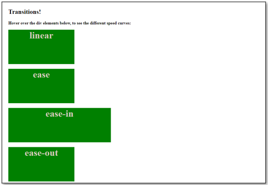
Transition Delay
You can set a transition delay. Now all this will do is to set a time for the animation to wait, before it starts doing what it wants to do. Of course, if you are setting this delay in the hover event, your user will expect it to be doing something as soon as they start to hover over it, if it is giving the user a delay, they will think it is broken. However, you may want to add it to the load property for your page. Anyways, here is this delay thing. Use it in your animation if you want.
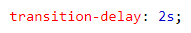
Transition duration
You could also add a duration, but we have already been setting how many seconds we want our animation to take in our code. So, this just does the same thing that we have already been doing.
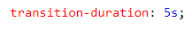Transform
This is just a very simple look into animating some of your properties. If you want to get into some of your more intense properties you will need to use Transform. Using transform will allow you to maneuver things like rotate, move, skew, and scale.
Scale
HTML
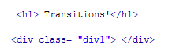CSS
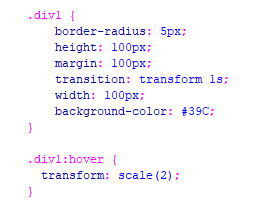Rotate
HTML
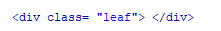CSS
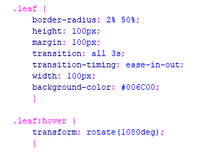Skew
HTML
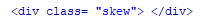CSS
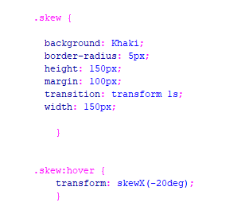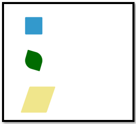
Translate
Translate is another property that allows simple animations of our object. If you would like to have your element move from one position into another on the page, you would use Translate.
HTML
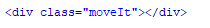
CSS
You will notice that we are adding a new way of adding a hover, and that is by placing it directly into the .moveIt rule. We will use the & sign, a colon, and the word hover to get this done.
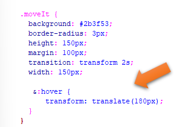Go Here to view this
Using Autoprefixer
You can use the Autoprefixer in Visual Studio, to make sure everything works correctly on all browsers. Remember we had gone over using this add-on in our chapter on working on all browsers, which you can find here.
You have to remember that if you do use this Autoprefixer, that it will only recognize code from the CSS file, and if you placed your code in the heading of the document, you will have to copy it all into a CSS file, highlight it and then use Autoprefixer by hitting F1, and choosing it from the dropdown.
Autoprefixer:Run
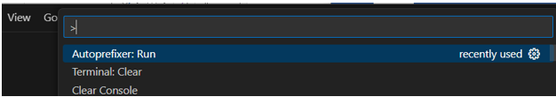
Notice how -webkit, and -ms was added in some places in your code
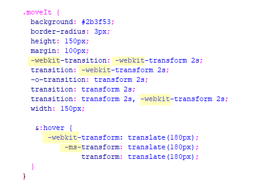